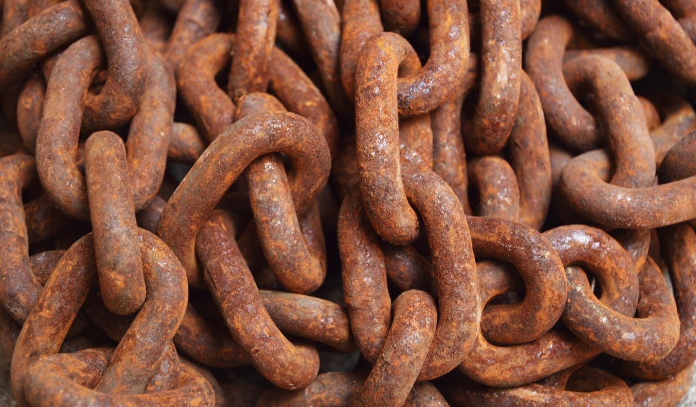
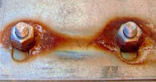
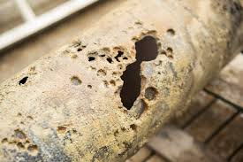
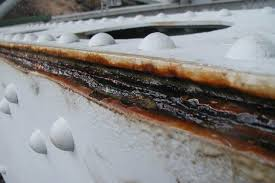
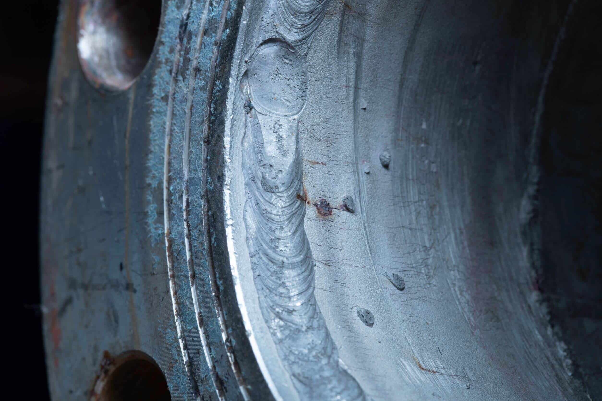
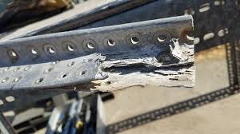

Corrosion
What is corrosion?
Corrosion is the natural process by which materials, usually metals, deteriorate as a result of chemical or electrochemical reactions with their environment. It is a common problem that occurs when materials are exposed to moisture, air, chemicals, or other environmental factors, causing them to lose their strength, appearance, or functionality over time.
How does Corrosion occur
Corrosion is often an electrochemical process involving the transfer of electrons. Here's how it typically happens:
- Anodic Reaction (Oxidation): At a specific area on the metal's surface (called the anode), the metal atoms lose electrons and form positive metal ions.
- Cathodic Reaction (Reduction): At another area (called the cathode), the electrons released from the anode are consumed in a reduction reaction.
- Electrolyte: A conductive medium, such as water with dissolved salts or acids, facilitates the movement of ions between the anode and cathode.
- Corrosion Products: The reactions result in the formation of corrosion products, such as rust which weaken the material.
Types of Corrosion
Corrosion can occur in various forms, depending on the material and environment:
- Uniform Corrosion: Even degradation over the entire surface of the material.

- Galvanic Corrosion: Occurs when two different metals are in electrical contact in a corrosive environment.

- Pitting Corrosion: Localized corrosion that leads to small pits or holes on the surface.

- Crevice Corrosion: Happens in confined spaces where the environment becomes more aggressive.

- Stress Corrosion Cracking (SCC): Combination of stress and a corrosive environment leads to cracking.

- Intergranular Corrosion: Occurs along the grain boundaries of a metal.

Factors Influencing Corrosion
- Material Composition: Different metals and alloys corrode at different rates.
- Environmental Conditions: High humidity, salt, and acidic environments accelerate corrosion.
- Protective Coatings: Paints, galvanization, or anodizing can slow down corrosion
- Presence of Impurities: Impurities in the metal or environment can influence corrosion rates.
Prevention and Control
- Protective Coatings: Applying paint, oil, or other protective layers to isolate the material from the environment.
- Cathodic Protection: Using sacrificial anodes (less noble metals) to protect the main structure.
- Material Selection: Using corrosion-resistant materials like stainless steel or aluminum.
- Environmental Control: Reducing humidity, removing salts, or using inhibitors.
- Regular Maintenance: Cleaning and inspecting structures to identify and address early signs of corrosion.
Understanding and managing corrosion is crucial in industries like construction, transportation, and energy, where material integrity is critical.
For more infomation on corrosion Click here